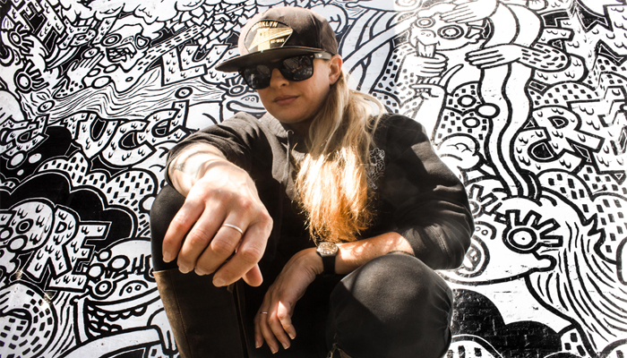

Q&A : LAUREN ASTA
A blank wall, a bucket of dark paint, a stepping ladder, and time. For the traveling California-bred muralist and artist Lauren Asta, there’s really not more that she asks for to showcase her vision to the world. With her instillations flourishing in major cities throughout the country (Oakland, Boston, New York, Chicago, San Diego), to say that the 35-year-old artist has been making significant moves to enhance her artistic visionary would be a vast understatement.
Simply put, Lauren Asta is a world builder. She does all of her work via freestyle hand drawing, without the service of putting a sketch together or a secondary shadow. By the time she brushes the first stroke on the wall, her universe is already built for us. Being no stranger to Chicago, we were grateful enough to have a sit-down conversation with Lauren as she had just wrapped up her latest piece on the #astaarttour—the 5,000 square-feet canvas of Lacuna Artists Lofts, right in the heart of Pilsen. Decompressing for a bit after a 30-day production course, Lauren talked to us about her slight experiences living in New York, why she had to take the training wheels off in Alameda, and how she was able to tolerate different levels of weather temperature when she first arrived in Chicago.

AMFM: How did you go from doing you work on a smaller scale to moving so large?
LAUREN ASTA: After I graduated college, I moved to New York. Like most artists do, they want to go for their dream to make big in New York. Making it big in New York is very hard to do, so I got into bartending. I’ve been bartending for about eight years trying to support my art career, which was very distracting to do, especially in New York. About five years ago, I decided to move back to California to focus on art, otherwise it was just never gonna happen. I got a job at a distillery in Alameda. The distillery was in a sixty-five thousand square-foot hangar. It used to house airplanes for the navy. There's this business right next to us, a brewery. They had the desire to have the whole space but another company bought them out and bought half of the space. The company put a huge wall right in between the space hangar and didn't finish it. It was just patches of dry wall. Hundreds of people a week would be sitting in this brewery, drinking this beautiful beer in this ugly room. I knew the owners, so I took it upon myself to propose a plan on how I can make the room look better with my art. At the time I was leaving to Costa Rica when I gave them my proposal. I was gone for two weeks, when I got back they were like “The scissor lift is coming on Monday.” I was like “HOLY SHIT!” We had only really discussed a quarter of the size of I ended up doing, which was a little over three thousand square feet. They told me I only had thirty days because they only rented the space for thirty days. Even before I could put training wheels on for doing something big scale, I had to take them off. I had no choice. It was a blessing in disguise because it forced me to just do it. I didn't sketch anything out; I didn't draw anything out on the walls, I just went for it. The pressure and the expectation of it built up my fuel to do something really good; it ended up being amazing. It was the first key to unlock what people on social media saw.
AMFM: A lot of artists have this overwhelming fear of taking that leap of faith. In your case, was that the point of intention for you to jump off and actually do it?
ASTA: I still was working full time at the distillery when I did this mural. Somehow, I fit all that in. I took a little bit of time off. I had benefits and I had vacation. I'm 35 now and that was about two and a half years ago. I don't want kids and I'm not the type of person that’s going to settle down and make roots in my life right now. The adrenaline and the success of the mural I finished at the brewery is addicting - knowing that I can do large scale, freehand, and that I'm a female artist. I have all these things about me that makes me unique. I can stick out in the world. There's a lot of people trying to do murals, but if I can be a triple threat it kind of was a recipe for success. I kept getting little gigs after that big one and I was like weening myself off my full time job. About a year ago in October, I got a email to do a big gig in Lincoln, Nebraska. They wanted me to do the entire inside of a restaurant that was opening up. It was paying really well. All the signs were there, all the doors were open, and the windows were cracked. I gave up my apartment and put money in the bank and paid off my credit cards. I've been on the road since then.
AMFM: What stood out for you during those eight months? Were there any memorable experiences and what did you learn on the way?
ASTA: I think the biggest learning curve was that I came with the knowledge that I had the stamina and the talent to execute a mural. That seems like that would be the hardest part. The hardest part was working with the weather and the elements and trying to figure out my whole strategy with that. The first time I was in Chicago painting, it was the beginning of April and I’m a California girl and April was cold; there was a random blizzard. I only had three days to do a certain amount of square footage. The weather was so cold and the moisture was so intense that I had to change paint. Those things are hard in the moment, but I feel very confident in all the realms and hurdles. This job at Lacuna was the first time I learned how to operate a big boom by myself. That was a little nerve wrecking but within ten minutes, I was like “Oh I got this.” Having the mental capacity and patience; like this one took me 30 days, and the total time was 34 days. I welcome the hurdles. It’s only going to make me stronger.
AMFM: Being a female artist, how do you feel about the way that women get treated in the art world?
ASTA: There’ll be times where I’m doing public murals, and I literally would be covered in paint. Without fail, the public will always turn to the male and ask about the art and congratulate him. It’s such a interesting thing that happens. I work with such a big scale that I want bigger; give me a whole building and I will do it. I think a lot of people have a hard time understanding that and would ask themselves “Why would someone want to do that?” and “ How can someone do that?” Most of the time when I'm first starting, I would get responses like “You’re doing this all by yourself?” or “Are you a real artist?” If I were a male artist, I wouldn't get these responses. People also ask me how much I get paid. I'm in my mid-30s and the stereotypes are attached to me. I don't want to have children; I consider these walls as my children. I think it's still a hard thing for people to accept. It could be reason why there aren’t that many women in the game. You gotta have something that sets you apart. I kind of hate that that’s a part of my triple threat; but at the end of the day, it is what it is.
AMFM: How do you feel about mistakes?
ASTA: I'm comfortable about it now. Around when I started my first mural, I was trying to be a perfectionist; but now, I've gotten better. I’m confident with my lines and that's because I’ve been doing it for a while. If there is a happy accident, it usually turns out to be better than I pre-planned.
AMFM: What do you love about words?
ASTA: If you repeat a style, it can get stagnant. So, this evolution has come from just doing this a lot. Words came because my characters are animated and their mouths are open; for me, it was a natural thing to progress words coming out of their mouths. As I noticed the words interacting with the characters it started to become a question of “What if I started creating my own words?” Often times people look at a piece of art and wonder “What does it mean?” I hate that question and love it because people are genuinely interested which is good, but, do you have to hear what your favorite song is about? Or the title of the song to enjoy it? No. There's something about the beat, the lyrics, the voice that attracts you. You can look at something and enjoy it, not even knowing what the meaning of it is. Creating words has kind of been a thing like that. You can kind of create your own storyline. I am Italian. So I’ve enjoyed interacting with my Italian roots, not only because it's a part of family but they’re [words] beautiful and they sound awesome. To some people, it [language] kind of even looks like made up words. When you put things together like red and blue makes purple, or when you see a pot of water, but then you see squiggly lines, you know that the water is hot. Two things interacting together are creating something else. So words and images are creating something right now.
AMFM: What is your favorite word?
ASTA: Bruto. In Italian it means ugly or bold. I've made up a couple of words. I can't take credit for this one, but the word swellelegant has been in all of my murals now. The mural I did in Lincoln, Nebraska is called HopCat. Hop as in beer, but the owner of the company liked the whole thing.
AMFM: Did you always want to be a artist? Was it a goal to be where you are or did you just find yourself here?
ASTA: This was always the goal. I don't think anyone wants a 9-5 job. I started out selling my art. A lot of people give up too quickly. I think people get scared, give up too quickly and don't follow through. You gotta have faith and talent. I always had faith. Who knows what will be next…
FOR MORE FROM LAUREN ASTA: